. В результате на экране появится окно настройки параметров сетки (рис. 7.3).
. В результате на экране появится окно настройки параметров сетки (рис. 7.3).
Лекция посвящена вспомогательным объектам. В ней рассмотрены понятия сетка, направляющие, динамические направляющие и способы работы с ними.

Расположение объектов на странице можно задавать точно, указывая для их центра координаты x и y. Это удобно для незначительного количества объектов, в основном для прямоугольников и эллипсов (рис. 7.1).
Приведенный способ не подходит для объектов сложной формы, представляющих собой кривые Безье (рис. 7.2).
В программе CorelDRAW существует набор специальных средств контроля для проведения построений. Эти средства основаны на возможности привязки (прикрепления) создаваемых объектов к сетке, направляющим или другим объектам. Использование привязки значительно упрощает взаимное расположение отдельных узлов и объектов относительно друг друга. Вам не понадобится производить вычисления, чтобы определить координаты x и y для точного расположения объекта. Все, что необходимо сделать, — это активизировать привязку к тем или иным средствам контроля и перемещать отдельные объекты или их узлы друг относительно друга. При этом программа будет автоматически выстраивать и выравнивать перемещаемые объекты по линиям сетки, направляющим, другим объектам или узлам.
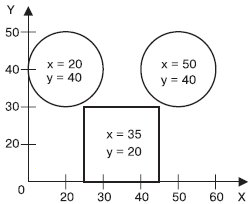
Рис. 7.1 Использование координат x и y для точного расположения объектов— прямоугольников и эллипсов
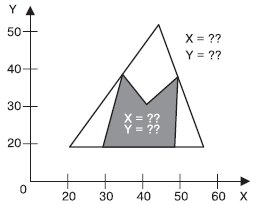
Рис. 7.2 Невозможность использования координат x и y для точного расположения объектов сложной формы
Лист миллиметровки или страница тетради в клеточку — это и есть наглядное представление такого средства контроля за построением, как сетка (Grid). Сетка — это набор горизонтальных и вертикальных пересекающихся штриховых или пунктирных линий, предназначенных для точного расположения или выравнивания объектов и узлов. Активизация привязки к сетке приводит к тому, что при перемещении объекты и узлы "перепрыгивают" между точками, находящимися на пересечениях вертикальных и горизонтальных линий сетки.
Чтобы включить отображение сетки, выполните команду меню View - Grid (Показать - Сетка). При этом напротив пункта Grid (Сетка) будет установлен флажок и на рабочей области появится сетка.
Чтобы спрятать сетку, выполните эту команду еще раз. Выбор пункта Grid (Сетка) при отображенной сетке приведет к снятию флажка и исчезновению сетки с рабочей области.
Интервал, через который линии сетки следуют друг за другом, можно настроить самостоятельно. Для этого необходимо открыть диалоговое окно Options (Параметры): выполните команду меню View - Grid and Ruler Setup (Показать - Установка сетки и линейки) или щелкните на кнопке . В результате на экране появится окно настройки параметров сетки (рис. 7.3).
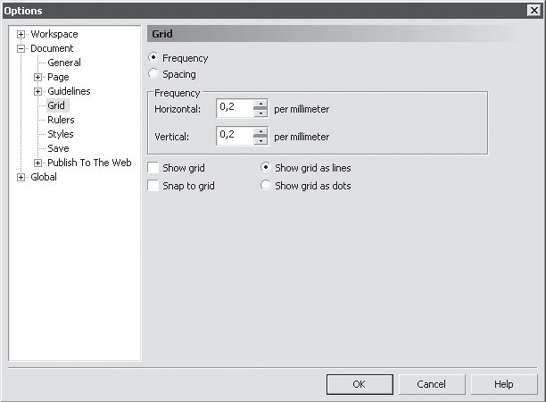
Рис. 7.3 Диалоговое окно настройки параметров сетки
Выполнив в данном окне требуемые настройки, следует щелкнуть на кнопке OK, чтобы они вступили в силу.
Сетка представляет собой набор горизонтальных и вертикальных пересекающихся штриховых или пунктирных линий, следующих друг за другом через определенный интервал или, другими словами, повторяющихся с заданной частотой. Внешний вид сетки можно выбрать с помощью положения переключателя: Show grid as lines (Показать сетку в виде линий) или Show grid as dots (Показать сетку в виде точек) (рис. 7.4).
Режим настройки параметров можно выбрать с помощью положения соответствующего переключателя: Frequency (Частота) или Spacing (Интервал) (рис. 7.5).
Если переключатель установлен в положение Frequency (Частота), то становятся доступными параметры, расположенные в области Frequency (Частота) (рис. 7.6).
Частоту отображения линий сетки можно задать как по горизонтали, так и по вертикали.
Если переключатель установлен в положение Spacing (Интервал), то доступными становятся параметры, расположенные в области Spacing (Интервал) (рис. 7.7).
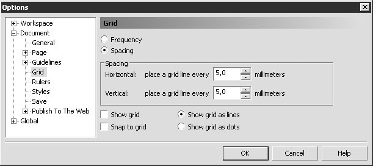
Рис. 7.4 Переключатель, отвечающий за внешний вид сетки
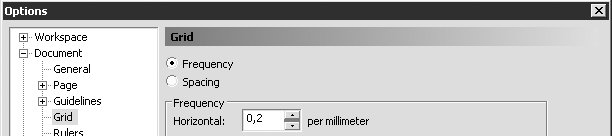
Рис. 7.5 Переключатель, предоставляющий возможность выбрать режим настройки параметров сетки
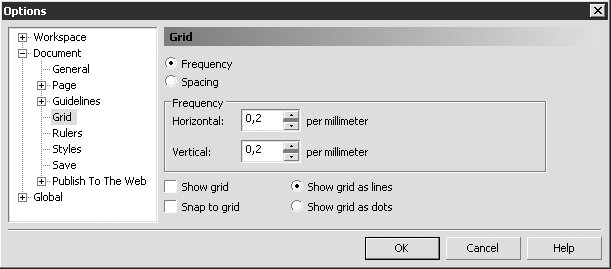
Рис. 7.6 Параметры настройки частоты линий сетки
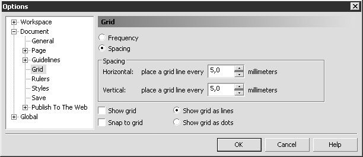
Рис. 7.7 Параметры настройки интервала между линиями
Можно указывать интервал между линиями сетки как по горизонтали, так и по вертикали. Значение задают в миллиметрах (табл. 7.1).
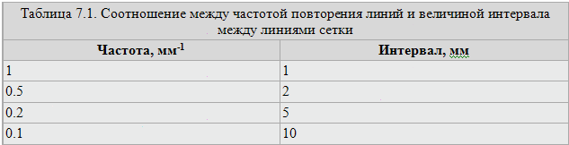
Таким образом, соотношение между частотой повторения линий и интервалом между ними можно выразить в виде соотношения:
Настроив требуемые параметры, необходимо активизировать привязку к линиям сетки. Для этого необходимо выполнить команду меню View - Snap To Grid (Показать - Привязка к сетке).
Выполнение этого действия приведет к установке в меню соответствующего флажка.
Частоту отображения линий сетки можно задать как по горизонтали, так и по вертикали.
Включать и отключать привязку к линиям сетки можно также щелчком на кнопке Snap To Grid (Привязка к сетке) (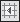), расположенной на панели свойств (рис.7.8).
Рис. 7.8 Расположение кнопки Snap To Grid (Привязка к сетке) на панели свойств

ПРИМЕЧАЕНИЕ. Данные параметры отображаются на панели свойств после выбора инструмента Pick (Выбор) ( ) и щелчка на свободной от графических объектов части рабочей области.
) и щелчка на свободной от графических объектов части рабочей области.
Направляющие (Guidelines) представляют собой линии, которые могут быть размещены в любом месте рабочей области страницы. Существует три типа направляющих: горизонтальные, вертикальные и наклонные. C направляющими можно работать, как с объектами, то есть их можно добавлять, выделять, перемещать, вращать, копировать, блокировать и удалять. Однако в отличие от объектов направляющие, как и сетка, представляют собой средства контроля построений. Удобство использования направляющих заключается в том, что они могут быть не только горизонтальными и/или вертикальными линиями, но еще и наклонными; кроме того, их может быть требуемое количество. Активизация привязки к направляющим приводит к тому, что при перемещении объектов или узлов они "прилипают" к направляющим или точкам пересечения направляющих.
Для создания направляющих удобно пользоваться линейками, которые располагаются сверху и слева от рабочей области (рис. 7.9).
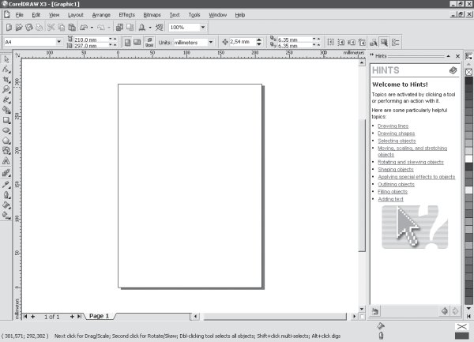
Рис. 7.9 Горизонтальная и вертикальная линейки
ПРИМЕЧАЕНИЕ. Если линейки отсутствуют, выполните комнаду меню View - Rulers (Показать - Линейки).
Чтобы создать горизонтальную направляющую, необходимо выполнить такие действия.
Активизировать инструмент Pick (Выбор) ().
Навести указатель мыши на горизонтальную линейку, расположенную в верхней части рабочей области (рис. 7.10).
Нажать кнопку мыши и, не отпуская ее, переместить мышь вниз, "вытягивая" горизонтальную направляющую.
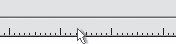
Рис. 7.10 Внешний вид указателя мыши и его расположение на горизонтальной линейке
Чтобы создать вертикальную направляющую, выполните следующее.
Активизировать инструмент Pick (Выбор) ().
Наведите указатель мыши на вертикальную линейку (рис. 7.11).
Нажмите кнопку мыши и, не отпуская ее, переместите мышь вправо, "вытягивая" вертикальную направляющую.
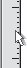
Рис. 7.11 Внешний вид указателя мыши и его расположение на вертикальной линейке
Направляющие представляют собой пунктирные линии, с которыми можно производить следующие действия:
выбирать;
перемещать;
вращать;
изменять цвет;
удалять;
блокировать.
СОВЕТ. Все вышеперечисленные действия с направляющими следует выполнять при активном инструменте Pick (Выбор).
Чтобы выбрать направляющую, наведите на нее указатель мыши и щелкните. При этом она изменит цвет на красный. Рассмотрим параметры, которые отображаются на панели свойств при выделенной направляющей (рис. 7.12).
Поля Object(s) Position (Положение объектов) предназначены для задания координат расположения направляющих. Поскольку направляющие представляют собой бесконечные линии, не имеющие ни начала, ни конца, то для расположения горизонтальных направляющих используется только координата y, для вертикальных — x.
Поле Angle of Rotation (Угол поворота) задает угол поворота направляющей.
Поля Center of Rotation Position (Положение центра вращения) позволяют задать координаты x и y центра вращения направляющей.
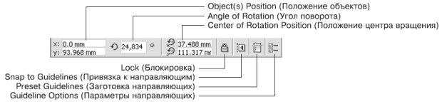
Рис. 7.12 Панель свойств при выделенной направляющей
Кнопка Lock (Блокировка) "замораживает" направляющую. В результате с ней ничего нельзя сделать до тех пор, пока она не будет разблокирована.
Кнопка Snap to Guidelines (Привязка к направляющим) активизирует режим привязки объектов и узлов к линиям или точками пересечения линий направляющих.
Кнопка Preset Guidelines (Заготовка направляющих) открывает окно Options (Параметры), в котором можно выбрать и установить наборы направляющих тех или иных шаблонов документов.
Кнопка Guideline Options (Параметры направляющих) также открывает раздел настройки направляющих окна Options (Параметры).
Операции, связанные с перемещением, вращением и изменением положения центра вращения, можно производить как свободным движением мыши, так и точно, путем ввода значений.
Чтобы изменить положение направляющей с помощью мыши, необходимо выполнить следующие действия.
Выбрать инструмент Pick (Выбор) ().
Навести указатель мыши на требуемую направляющую, нажать основную кнопку мыши и, не отпуская ее, перетащить направляющую.
Отпустив кнопку мыши, закончить перемещение.
Если до перемещения направляющая не была выбрана, то указатель мыши будет иметь вид  . Указатель должен быть расположен острием к направляющей, которую требуется переместить.
. Указатель должен быть расположен острием к направляющей, которую требуется переместить.
Если направляющая до перемещения была выделена, то указатель имеет вид  — для горизонтальных направляющих, 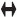— для вертикальных, 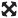— для наклоненных направляющих.
— для горизонтальных направляющих, 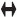— для вертикальных, 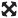— для наклоненных направляющих.
Чтобы точно изменить положение направляющей, необходимо выполнить следующее.
Выбрать требуемую направляющую.
На панели свойств в поле Object(s) Position (Положение объектов) ввести требуемое значение координаты направляющей.
Закончить ввод нажатием на клавиатуре клавиши Enter.
Чтобы повернуть направляющую с помощью мыши, действуйте следующим образом.
Выбрать инструмент Pick (Выбор) ().
Выберите требуемую направляющую.
Повторно щелкните на выбранной направляющей. На направляющей должны появиться маркеры вращения в виде изогнутых стрелок.
Наведите указатель мыши на один из двух маркеров вращения. Когда он примет вид  , нажмите кнопку мыши и, не отпуская ее, поверните направляющую.
, нажмите кнопку мыши и, не отпуская ее, поверните направляющую.
Закончите вращение, отпустив кнопку мыши.
Чтобы точно повернуть направляющую, выполните следующие действия.
Выбрать инструмент Pick (Выбор) ().
Выберите требуемую направляющую.
На панели свойств в поле Angle of Rotation (Угол поворота) введите требуемое значение угла поворота направляющей.
Закончите вращение, отпустив кнопку мыши.
ПРИМЕЧАЕНИЕ. Положительное значение угла поворота указывает на вращение направляющей против часовой стрелки, отрицательное значение — по часовой стрелке.
Вращение направляющей происходит вокруг центра вращения ( ), положение которого можно изменить как свободным движением мыши, так и точно, указав значение координат x и y.
), положение которого можно изменить как свободным движением мыши, так и точно, указав значение координат x и y.
Чтобы переместить центр вращения направляющей с помощью мыши, действуйте следующим образом.
Выбрать инструмент Pick (Выбор) ().
Выберите требуемую направляющую.
Повторно щелкните на выбранной направляющей. В центре направляющей появится маркер центра вращения ().
Расположите указатель мыши на маркере центра вращения и, когда он примет вид  , нажмите кнопку мыши и, не отпуская ее, переместить маркер центра вращения.
, нажмите кнопку мыши и, не отпуская ее, переместить маркер центра вращения.
Закончите перемещение, отпустив кнопку мыши.
Чтобы точно переместить центр вращения направляющей, выполните следующее.
Выбрать инструмент Pick (Выбор) ().
Выберите требуемую направляющую.
На панели свойств в поля Center of Rotation Position (Положение центра вращения) введите новые значения координат x и y.
Закончите ввод нажатием на клавиатуре клавиши Enter.
Чтобы активизировать привязку объектов и узлов к направляющим, необходимо выполнить команду меню View - Snap to Guidelines (Показать - Привязка к направляющим). При этом в меню установится соответствующий флажок.
Чтобы отключить привязку объектов и узлов к направляющим, необходимо повторно выполнить команду View - Snap to Guidelines (Показать - Привязка к направляющим), сняв соответствующий флажок.
Включение/отключение привязки к направляющим можно производить также щелчком на кнопке Snap to Guidelines (Привязка к направляющим) (), расположенной на панели свойств (см. рис. 7.12, 7.13).
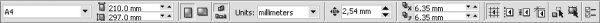
Рис. 7.13 Расположение кнопки Snap to Guidelines (Привязка к направляющим) на панели свойств при отсутствии выбранных объектов
Чтобы удалить направляющую, необходимо выполнить такие действия.
Выбрать инструмент Pick (Выбор) ().
Выберите требуемую направляющую.
Нажать на клавиатуре клавишу Delete.
Чтобы изменить цвет направляющей, выполните следующее.
Выбрать инструмент Pick (Выбор) ().
Выберите требуемую направляющую.
Щелкните правой кнопкой мыши на требуемом цвете на цветовой палитре.
ПРИМЕЧАЕНИЕ. В общем случае цвет направляющей изменяют таким же образом, как и цвет контура линии объекта.
Действия, связанные с созданием, перемещением и удалением направляющих, можно также прoизводить в соответствующем разделе окна Options (Параметры).
Чтобы открыть окно Options (Параметры), выполните такие действия.
Выполните команду меню View - Guidelines Setup (Показать - Настройка направляющих). В результате на экране появится окно настройки параметров направляющих (рис. 7.14).
Настройте нужные параметры и щелкните на кнопке OK, чтобы настройки вступили в силу.
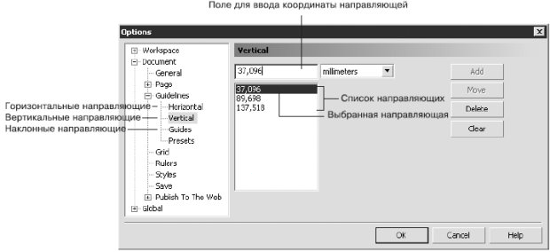
Рис. 7.14 Окно настройки параметров направляющих
В левой части окна Options (Параметры) отображаются подразделы раздела Guidelines (Направляющие): Horizontal (Горизонтальные), Vertical (Вертикальные) и Guides (Наклонные).
Параметры горизонтальных и вертикальных направляющих идентичны (см. рис. 7.14). Доступны такие команды:
Add (Добавить);
Move (Переместить);
Delete (Удалить);
Clear (Очистить).
Чтобы добавить направляющую, выполните следующее.
Введите в текстовое поле значение координаты направляющей.
Щелкните на кнопке Add (Добавить).
Чтобы переместить существующую направляющую, выполните следующее.
Выберите направляющую в списке.
Введите в текстовое поле новое значение координаты направляющей.
Щелкните на кнопке Move (Двигать).
Чтобы удалить существующую направляющую, необходимо действовать следующим образом.
Выбрать направляющую в списке.
Щелкнуть на кнопке Delete (Удалить).
Чтобы удалить все направляющие выбранного раздела, необходимо щелкнуть на кнопке Clear (Очистить).
Для расположения наклонной направляющей можно задать координаты x и y двух точек или x и y одной точки и угол наклона.
Способ создания наклонной направляющей выбирают из списка Specify (Спецификация) (рис. 7.15).
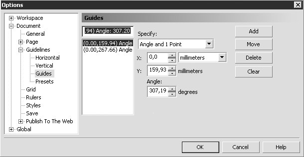
Рис. 7.15 Окно настройки параметров наклонных направляющих
Сетка и направляющие — не единственный способ контроля за точностью построения сложных графических изображений. Можно установить привязку перемещаемого или создаваемого объекта (который в данном случае называется объектом-источником) к различным точкам других объектов (которые называются объектами-целями).
Для удобства работы точки привязки подсвечиваются при наведении нa них указателя мыши. Выбрать точки привязки можно в разделе настройки параметров привязки окна Options (Параметры) (рис. 7.16).
Чтобы вызвать данное окно, необходимо выполнить команду меню Tools - Options (Инструменты - Параметры).
ПРИМЕЧАЕНИЕ. Параметры привязки к объектам находятся в данном окне в разделе Workspace (Рабочее пространство).

Рис. 7.16 Окно настройки привязки к объектам
Режимы привязки определяют точки привязки объектов, которые могут использоваться. Рассмотрим эти режимы.
Node (Узел) — устанавливает привязку к узлам объектов.
Intersection (Пересечение) — к точкам пересечения контуров объектов.
Midpoint (Средняя точка) — к средней точке линейного сегмента.
Quadrant (Квадрант) — к точкам, расположенным на окружностях, эллипсах или дугах. Положение этих точек определяется углами 0, 90, 180 и 270° секторов данных фигур.
Tangent (Тангенс) — к точкам на внешней стороне дуги, окружности или эллипса, которые соприкасаются с объектом, но не пересекают его.
Perpendicular (Перпендикуляр) — к точкам на внешнем крае сегмента, где линия будет перпендикулярна к объекту.
Edge (Край) — к точке касания края объекта.
Center (Центр) — к центру объекта.
Text Baseline (Базовая линия текста) — к базовой линии строчного или абзацного текста.
Можно устанавливать любые комбинации режимов привязки или отключать некоторые из них, чтобы ускорить работу приложения. Существует возможность выбора порога чувствительности точек привязки к положению указателя мыши (рис. 7.17).
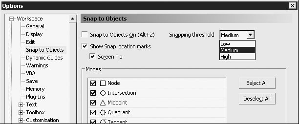
Рис. 7.17 Список порога привязки
Порог привязки определяется минимальным расстоянием (радиусом активации) между указателем мыши и точкой привязки. Из списка можно выбрать одно из следующих значений:
Low (Низкий) — радиус активации точки привязки составляет четыре экранных пиксела;
Medium (Средний) — восемь экранных пикселов;
High (Высокий) — шестнадцать экранных пикселов.
Таким образом, когда указатель мыши располагается внутри радиуса порога чувствительности, точка привязки подсвечивается и рядом с ней всплывает подсказка с названием точки привязки (рис. 7.18).
Включение режима активации точки привязки и отображения ее названия задают установкой флажков Show Snap location marks (Показать точки объектной привязки) и Screen Tip (Подсказка) (рис. 7.19).
Чтобы активизировать привязку к объектам, необходимо выполнить команду меню View - Snap to Objects (Показать - Привязка к объектам). При этом будет установлен соответствующий флажок.
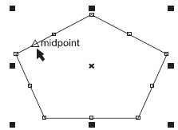
Рис. 7.18 Пример активации точки привязки и отображение ее названия при прохождении рядом с ней указателя мыши
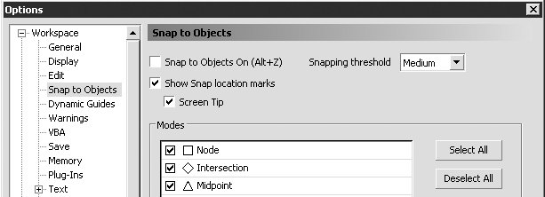
Рис. 7.19 Флажки Show Snap location marks (Показать точки объектной привязки) и Screen Tip (Подсказка)
Чтобы отключить привязку к объектам, необходимо повторно выполнить эту команду. При этом соответствующий флажок будет снят.
Включать/отключать привязку к объектам можно также щелчком на кнопке Snap to Objects (Привязка к объектам) (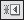), расположенной на панели свойств при отсутствии выделенных объектов (рис. 7.20).
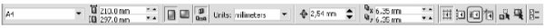
Рис. 7.20 Расположение кнопки Snap to Objects (Привязка к объектам) на панели свойств
При привязке одного объекта к другому принято использовать следующие термины:
"исходный объект" — объект, который выбирают первым;
"целевой объект" — объект, к которому привязывается исходный.
Чтобы произвести привязку исходного объекта к целевому, необходимо выполнить следующие действия.
Выбрать инструмент Pick (Выбор) ().
Выделить исходный объект.
Навести указатель мыши на требуемую точку привязки исходного объекта.
Нажать кнопку мыши и, не отпуская ее, за точку привязки переместить исходный объект к целевому.
Когда указатель мыши разместится на требуемой точке привязки целевого объекта, отпустить кнопку мыши.
Динамические направляющие — это элементы, которые появились в 12 версии программы. Следует отметить пользу динамических направляющих при проведении построений и рисовании. Динамические направляющие можно представить как сочетание обычных направляющих и точек привязки.
Динамические направляющие можно "вытягивать" из таких точек привязки, как центр, узел, квадрант и базовая линия текста. Динамические направляющие используются для размещения исходных объектов относительно самих себя, других объектов, а также при рисовании. Существует возможность размещения объекта в точке пересечения динамических направляющих.
Чтобы активизировать динамические направляющие и привязку к ним, необходимо выполнить команду меню View - Dynamic Guides (Показать - Динамические направляющие). Это приведет к установке соответствующего флажка.
Чтобы отключить динамические направляющие и привязку к ним, необходимо повторно выполнить данную команду, тем самым сняв флажок.
Включать/отключать привязку к объектам можно также щелчком на кнопке Dynamic Guides (Динамические направляющие) (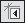), расположенной на панели свойств при отсутствии выделенных объектов (рис. 7.21).
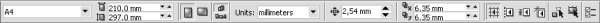
Рис. 7.21 Расположение кнопки Dynamic Guides (Динамические направляющие) на панели свойств при отсутствии выделенных объектов
Чтобы переместить объект, используя динамические направляющие, выполните следующие действия.
Выделить объект.
Объект можно перемещать, "ухватив" за одну из его точек привязки (узел, центр, квадрант или базовую линию текста). В этом случае подведите указатель мыши к требуемой точке привязки. Выбор точки привязки сопровождается ее подсвечиванием и появлением подсказки — названия точки привязки (рис 7.22).
Нажмите кнопку мыши и, не отпуская ее, перетащите объект в требуемом направлении. Начало движения объекта будет сопровождаться появлением синей направляющей линии, к которой объект будет привязываться на протяжении всего перемещения (рис. 7.23).
Отпустите кнопку мыши, чтобы закончить перемещение.
Движение объекта при включенных динамических направляющих сопровождается перемещением не самого объекта, а его копии синего цвета (см. рис. 7.23). Как только вы отпустите кнопку мыши, копия исчезнет и на ее место переместится исходный объект, который до этого момента был неподвижен.
При перетаскивании объекта рядом с динамической направляющей отображается угол ее наклона и расстояние, пройденное объектом от последней точки привязки, которая использовалась для создания динамической направляющей (см. рис. 7.23). Отображение расстояния способствует точному расположению объекта.
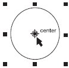
Рис. 7.22 Пример выбора точки привязки и отображение ее названия при наведении на нее указателя мыши
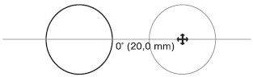
Рис. 7.23 Динамическая направляющая с указанием угла ее наклона
Появление динамических направляющих задают настройкой соответствующих параметров.
Чтобы открыть окно настройки параметров динамических направляющих, выполните комнаду меню View - Dynamic Guides Setup (Показать - Настройка динамических направляющих). В результате на экране появится соответствующий раздел окна Options (Параметры) (рис. 7.24). Выполнив требуемые настройки, щелкните на кнопке OK, чтобы изменения вступили в силу.
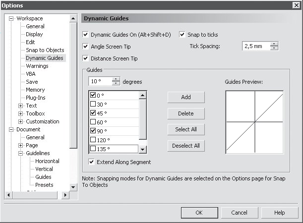
Рис. 7.24 Раздел настройки динамических направляющих окна Options (Параметры)
Чтобы включить отображение динамических направляющих вдоль одного или нескольких заранее установленных направлений, необходимо установить в списке флажки соответствующих углов. Выбранные направления для динамических направляющих отображаются в поле Guides Preview (Предварительный просмотр направляющих).
Существующий список углов направляющих можно дополнить новыми значениями, для чего необходимо выполнить следующие действия.
В поле degrees (градусы) введите значение угла.
Щелкните на кнопке Add (Добавить).
Если необходимость отображения динамических направляющих вдоль того или иного угла исчезла, можно удалить соответствующие настройки. Для этого выполните такие действия.
Выберите ненужный угол в списке в области Guides (Направляющие).
Щелкните на кнопке Delete (Удалить).
Появление подсказки со значением угла динамической направляющей можно отключить/включить соответственно снятием/установкой флажка Angle Screen Tip (Подсказка об угле).
Появление подсказки со значением расстояния между указателем мыши и последней точкой активации динамической направляющей можно отключить/включить соответственно снятием/установкой флажка Distance Screen Tip (Подсказка о расстоянии).
Размер всплывающей подсказки можно задать в поле Tick Spacing (Размер подсказки).
Установка определенных углов в окне настройки параметров динамических направляющих приводит к тому, что при изменении направления движения объекта будет подсвечиваться и активизироваться та динамическая направляющая, угол наклона которой ближе всего к направлению движения объекта. Правильная настройка углов динамических направляющих позволяет добиться упрощения действий при построении.
Кроме динамических направляющих с заданным углом, можно также отобразить динамические направляющие, которые являются продолжениями линейных сегментов (рис. 7.25).
Чтобы включить отображение динамических направляющих вдоль линейного сегмента, необходимо установить флажок Extend Along Segment (Вытянуть вдоль сегмента).
Динамические направляющие, вытянутые из точек привязки (центра, узла, квадранта или базовой линии текста), используют для размещения исходных объектов относительно самих себя, других объектов, а также при рисовании. Кроме того, существует возможность размещения объекта в точке пересечения динамических направляющих (рис. 7.26).
При динамической привязке применяют те же термины, как при привязке одного объекта к другому, — "исходный" и "целевой" объекты.
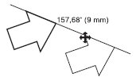
Рис. 7.25 Пример динамической направляющей, которая является продолжением линейного сегмента
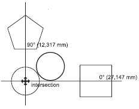
Рис. 7.26 Пример использования пересечения динамических направляющих
Чтобы переместить объект, используя пересечения динамических направляющих, необходимо выполнить такие действия.
Выделите объект. Объект можно перемещать, ухватив мышью одну из его точек привязки (узел, центр, квадрант или базовую линию текста). Для этого подведите указатель мыши к требуемой точке привязки. Выбор точки привязки сопровождается ее подсвечиванием и появлением подсказки с названием (рис. 7.27, а).
Нажмите кнопку мыши и, не отпуская ее, переместите исходный объект на требуемую точку привязки первого целевого объекта.
Выбор точки привязки сопровождается подсвечиванием и появлением подсказки с названием (рис. 7.27, б). Переместите объект в требуемом направлении. Начало движения объекта будет сопровождаться появлением синей направляющей линии, к которой объект будет привязываться на протяжении всего перемещения (рис. 7.27, в).
Переместите исходный объект на требуемую точку привязки второго целевого объекта.
Выбор точки привязки сопровождается подсвечиванием и появлением подсказки с названием (рис. 7.27, г). Переместите объект в требуемом направлении. Начало движения объекта будет сопровождаться появлением синей направляющей линии, к которой объект будет привязываться на протяжении всего перемещения (рис. 7.27, д).
Переместите исходный объект в предполагаемую точку пересечения динамических направляющих и, когда указатель мыши совпадет с точкой пересечения динамических направляющих, появится соответствующая подсказка (рис. 7.27, е).
Если вы достигли требуемого пересечения, отпустите кнопку мыши, чтобы закончить перемещение.
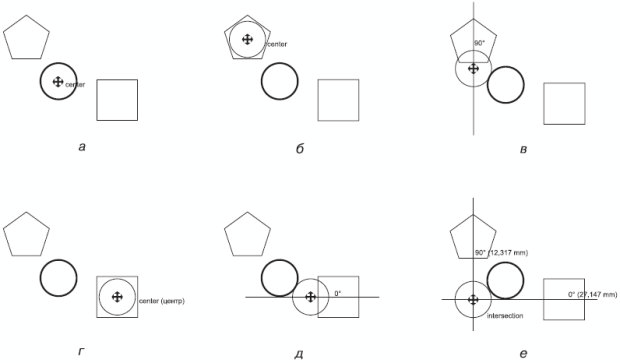
Рис. 7.27 Последовательность действий при выравнивании положения центра эллипса относительно точки пересечения динамических направляющих, вытянутых из центров многоугольника и квадрата
Программа CorelDRAW позволяет выравнивать и распределять объекты. Выравнивать объекты можно относительно центра или краев отдельных объектов, страницы или произвольно указанной точки. При выравнивании объекты единообразно выстраиваются в соответствии с заданными параметрами: по горизонтали (рис. 7.28) или по вертикали (рис. 7.29).
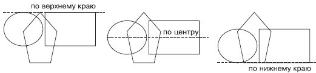
Рис. 7.28 Примеры выравнивания объектов по горизонтали
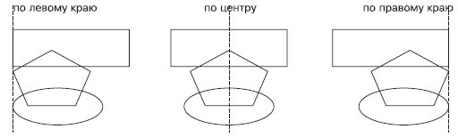
Рис. 7.29 Примеры выравнивания объектов по вертикали
При выравнивании объекты выстраиваются относительно краев или центров габаритных рамок (рис. 7.30).
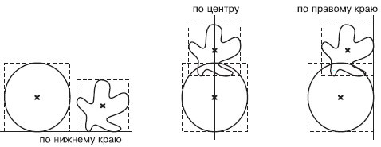
Рис. 7.30 Выравнивание объектов
Команды выравнивания объектов доступны в подменю Arrange - Align and Distribute (Расположение - Выровнять и распределить):
Align Left (Выровнять по левому краю);
Align Right (Выровнять по правому краю);
Align Top (Выровнять по верхнему краю);
Align Bottom (Выровнять по нижнему краю);
Align Centers Horizontally (Выровнять центры по горизонтали);
Align Centers Vertically (Выровнять центры по вертикали);
Center to Page (Центрировать на странице);
Center to Page Horizontally (Центрировать на странице по горизонтали);
Center to Page Vertically (Центрировать на странице по вертикали);
Align and Distribute (Выровнять и распределить) — открывает одноименное диалоговое окно (рис. 7.31);
Align (Выровнять) (см. рис. 7.31);
Distribute (Распределить) (рис. 7.32).
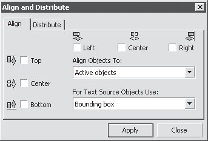
Рис. 7.31 Окно Align and Distribute (Выровнять и распределить)
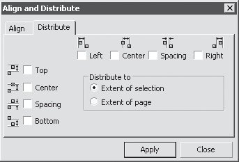
Рис. 7.32 Окно Align and Distribute (Выровнять и распределить), вкладка Distribute (Распределить)
Данное окно можно открыть также после выделения объектов, щелчком на кнопке Align and Distribute (Выровнять и распределить), расположенной на панели свойств () (рис. 7.33).
Объекты можно распределить в пределах пространства выделения или страницы, по горизонтали и/или вертикали. При распределении объекты располагаются на одинаковом расстоянии друг от друга по горизонтали и/или вертикали в соответствии с указанными сторонами или центрами габаритных рамок объектов.
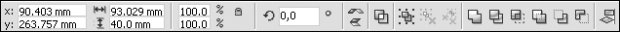
Рис. 7.33 Расположение кнопки Align and Distribute (Выровнять и распределить) на панели свойств
По горизонтали объекты можно распределить следующим образом.
Left (Влево) — расстояния между левыми сторонами габаритных рамок объектов становятся одинаковыми (рис. 7.34);
Center (Центр) — расстояния между центрами габаритных рамок объектов по горизонтали становятся равными (рис. 7.35);
Spacing (Дистанция) — промежутки между габаритными рамками объектов по горизонтали становятся равными (рис. 7.36);
Right (Вправо) — расстояния между правыми сторонами габаритных рамок объектов становятся равными (рис. 7.37).
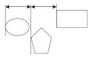
Рис. 7.34 Распределение объектов по левым краям
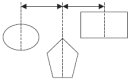
Рис. 7.35 Распределение объектов по центрам вдоль горизонтали
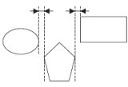
Рис. 7.36 Распределение объектов по дистанции
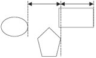
Рис. 7.37 Распределение объектов по правому краю
По вертикали объекты можно распределить следующим образом:
Top (Верх) — расстояния между верхними сторонами габаритных рамок объектов становятся равными (рис. 7.38);
Center (Центр) — расстояния между центрами габаритных рамок объектов вдоль вертикали становятся равными (рис. 7.39);
Spacing (Дистанция) — распределяет объекты таким образом, что вертикальные промежутки между габаритными рамками объектов становятся равными (рис. 7.40);
Bottom (Низ) — распределяет объекты таким образом, что расстояния между нижними гранями габаритных рамок объектов становятся одинаковыми (рис. 7.41).
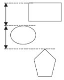
Рис. 7.38 Распределение объектов по верхнему краю
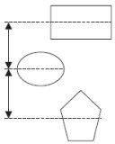
Рис. 7.39 Распределение объектов по центру по вертикали
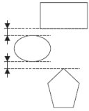
Рис. 7.40 Распределение объектов по дистанции
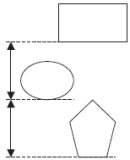
Рис. 7.41 Распределение объектов по нижнему краю
При выравнивании объектов относительно выделенных объектов используют понятие целевого объекта. Целевой объект — это объект, который в процессе выравнивания остается неподвижным, а остальные объекты выравниваются относительно его сторон или центра его габаритной рамки. Целевой объект определяется из очередности создания объектов или очередности выделения.
При создании каждый последующий объект располагается иерархически на уровень выше предыдущего. Например, последовательно постройте эллипс, прямоугольник и многоугольник. Уровни иерархического расположения этих объектов распределятся так, как показано на рис. 7.42.
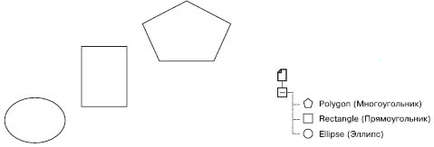
Рис. 7.42 Пример иерархической структуры расположения объектов
Таким образом, эллипс, построенный ранее всех остальных, находится иерархически ниже прямоугольника и полигона. Именно эллипс будет являться целевым объектом при выравнивании объектов в выделенной области. Эллипс останется неподвижным, а прямоугольник и многоугольник будут выровнены относительно его габаритной рамки (рис. 7.43).
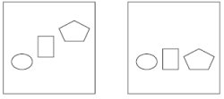
Рис. 7.43 Выравнивание по нижнему краю объектов в области выделения
Чтобы создать область выделения, выберите инструмент Pick (Выбор) () и по диагонали охватите необходимую область пунктирной рамкой, удерживая нажатой кнопку мыши (рис. 7.44).
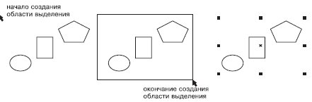
Рис. 7.44 Последовательность действий при создании области выделения
Если выделять объекты поочередно, щелчками, удерживая при этом нажатой клавишу Shift, то последний выбранный объект будет использоваться в качестве целевого объекта, который останется неподвижным и относительно сторон или центра габаритной рамки которого будут выровнены остальные объекты.
Для примера выполните выравнивание центров объектов по вертикали (), выбрав в качестве целевого объекта прямоугольник. Выбрав инструмент Pick (Выбор) (), щелкните кнопкой мыши на эллипсе. Затем, удерживая нажатой клавишу Shift, выберите многоугольник и, в последнюю очередь, прямоугольник. Именно прямоугольник будет являться целевым при выравнивании объектов, выделенных поочередным выбором. Он останется неподвижным, а многоугольник и эллипс будут выровнены относительно центра его габаритной рамки (рис. 7.45).
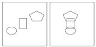
Рис. 7.45 Выравнивание по вертикали центров объектов, выделенных поочередным выбором
Чтобы выровнять объект, выполните следующие действия.
Выберите инструмент Pick (Выбор) ().
Выделите объекты.
Выполните выравнивание объектов, выбрав команду меню Arrange - Align and Distribute - Align and Distribute (Расположение - Выровнять и распределить - Выровнять и распределить) или щелкнув на кнопке Align and Distribute (Выровнять и распределить) () на панели свойств.
Выбор пункта Align and Distribute (Выровнять и распределить) или щелчок на одноименной кнопке на панели свойств приведет к открытию окна Align and Distribute (Выровнять и распределить). На вкладке Align (Выровнять) данного окна из раскрывающегося списка Align Objects To (Выровнять объекты по) можно задать границы, в пределах которых будет выполнено выравнивание,или произвольную точку на рабочей области (рис. 7.46).
Объекты можно выровнять следующим образом:
Active objects (Активные объекты) — относительно целевого объекта;
Edge of page (Край страницы) — краев страницы;
Center of page (Центр страницы) — точки центра страницы;
Grid (Сетка) — близлежащей точки сетки (рис. 7.47);
Specified point (Указанная точка) — произвольной точки, указанной щелчком кнопки мыши на странице рабочей области.
При выравнивании текстовых блоков можно выбрать из списка For Text Source Objects Use (Использовать для текстовых блоков) необходимую привязку (рис. 7.48).
В данном списке присутствуют следующие способы привязки:
First line baseline (Основание первой строки) — для привязки текстового блока используется основание первой строки (рис. 7.49);
Last line baseline (Основание последней строки) — для привязки текстового блока используется основание последней строки (рис. 7.50);
Bounding box (Ограничивающая рамка) — для привязки текстового блока используется его габаритная рамка (как при привязке объекта).
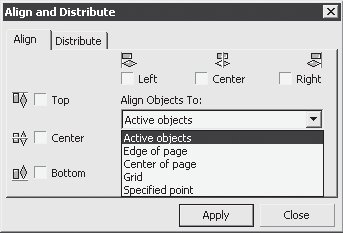
Рис. 7.46 Список Align Objects To (Выровнять объекты по) на вкладке Align (Выровнять) окна Align and Distribute (Выровнять и распределить)
Рис. 7.47 Пример выравнивания центра выделенных объектов по горизонтали и вертикали при выборе в списке Align Objects To (Выровнять объекты по) пункта Grid (Сетка)
Рис. 7.48 Список For Text Source Objects Use (Использовать для текстовых блоков) на вкладке Align (Выровнять) окна Align and Distribute (Выровнять и распределить)
Рис. 7.49 Пример использования основания первой строки при выравнивании текста по верхней грани объекта
Рис. 7.50 Пример использования основания последней строки при выравнивании текста по верхней грани объекта
Чтобы распределить объекты, необходимо выполнить такие действия.
Выбрать инструмент Pick (Выбор) ().
Выделить объекты.
Выполнить команду меню Arrange - Align and Distribute - Align and Distribute (Расположение - Выровнять и распределить - Выровнять и распределить) или щелкнуть на кнопке Align and Distribute (Выровнять и распределить) () на панели свойств.
В открывшемся окне Align and Distribute (Выровнять и распределить) перейдите на вкладку Distribute (Распределить).
Установите флажки требуемых вариантов распределения.
Переключатель Distribute to (Распределить по) установить в положение, соответствующее области распределения.
Щелкнуть на кнопке Apply (Применить).
Объекты можно распределить либо в пределах области выделения, либо в пределах страницы. При этом крайние объекты остаются неподвижными, а "внутренние" подвергаются распределению (рис. 7.51).
Рис. 7.51 Пример распределения объектов, при котором промежутки между ними по горизонтали становятся одинаковыми
СОВЕТ. Таким образом, при распределении объектов следует уделять внимание расположению двух "крайних", в то время как остальные объекты, участвующие в распределении, могут находиться где угодно в области между двумя "крайними"
Таким образом, существующие и строящиеся объекты можно выровнять с помощью следующих вспомогательных объектов:
сетка;
направляющие;
другие объекты;
динамические направляющие.
Эти вспомогательные объекты можно использовать как в комплексе, то есть одновременно, так и по отдельности.